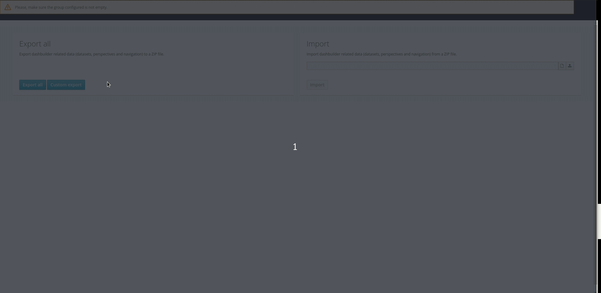
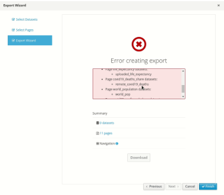

Gradual Export Dashboards from Business Central

Business Central (BC) is a complete application where you can control the full cycle of Business Automation: since authoring until monitoring. Inside BC, monitoring is done by a tool called Dashbuilder (DB) and it allows you to create dashboards and run it inside Business Central or in Dashbuilder Runtimes.
Since BC 7.25 release, it is possible to export and import these dashboards to other BC installations, this feature was described in depth in Importing and exporting Dashbuilder data.
With the introduction of Dashbuilder Runtime you may want to share a specific page or a set of pages along with its datasets to run on Dashbuilder Runtime, but with full export, all pages, and datasets are exported. With Gradual Export it’s now possible to select which assets you want to export using the new Gradual Export feature.
Dashboards Import/Export Gradual Export
Since Business Central 7.39 it is possible to select which assets you want to export from Business Central to another BC installation or Dashbuilder Runtimes. Following the same steps to export, you will find a new button with the description: “Custom Export”

Click on Custom Export will open a wizard that will allow you to select Datasets and Pages, then download a ZIP file that contains only what you selected.

Later you can either import this in Dashbuilder Runtime or in another BC installation, bearing in mind that it could override existing assets without any warning, so be careful when importing in another BC installation.
Using this feature it’s possible to export only the pages, without any datasets. However, if a page depends on a specific dataset it will not allow you to download the ZIP.

Once you correct the errors and add all the dependencies for your export, you can download the ZIP. Notice also that the navigation is always exported and if a page is not in the navigation then Runtime creates a navigation group for it.
Conclusion
The gradual export feature lets you create more fine-grained dashboards applications and run it on Dashbuilder Runtime. This feature together with multi-tenancy makes it possible to individually open dashboards in the same Runtime installation. Stay tuned for the next articles where we will show how all Dashbuilder new features can work together in a full demo.